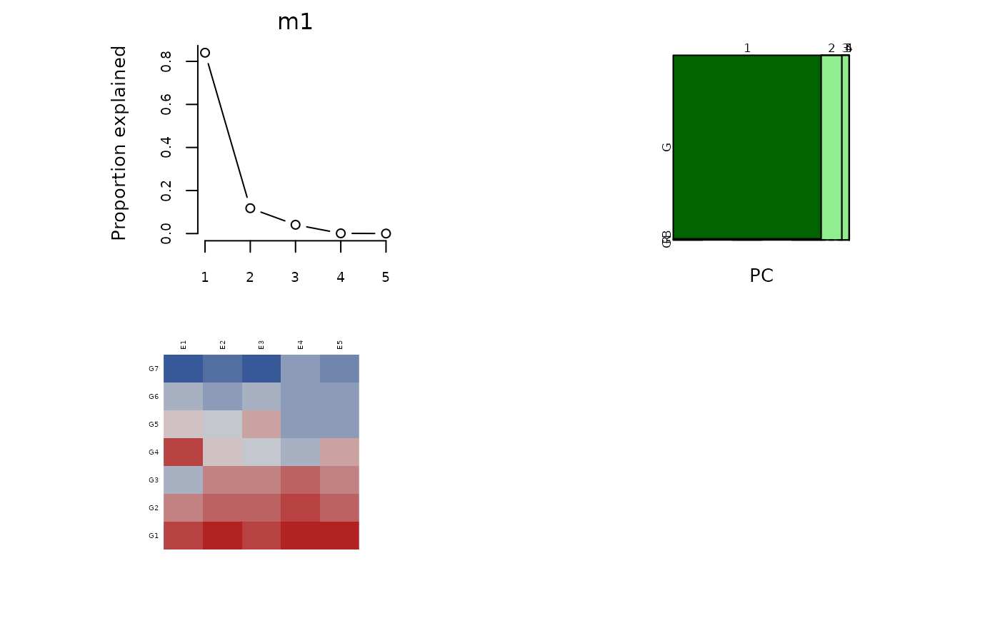

Fit a GGE (genotype + genotype * environment) model and display the results.
Usage
gge(x, ...)
# S3 method for class 'data.frame'
gge(x, formula, gen.group = NULL, env.group = NULL, ggb = FALSE, ...)
# S3 method for class 'formula'
gge(formula, data, gen.group = NULL, env.group = NULL, ggb = FALSE, ...)
# S3 method for class 'matrix'
gge(
x,
center = TRUE,
scale = TRUE,
gen.group = NULL,
env.group = NULL,
ggb = FALSE,
comps = c(1, 2),
method = "svd",
...
)
# S3 method for class 'gge'
plot(x, main = substitute(x), ...)
# S3 method for class 'gge'
biplot(
x,
main = substitute(x),
subtitle = "",
xlab = "auto",
ylab = "auto",
cex.gen = 0.6,
cex.env = 0.5,
col.gen = "darkgreen",
col.env = "orange3",
pch.gen = 1,
lab.env = TRUE,
comps = 1:2,
flip = "auto",
origin = "auto",
res.vec = TRUE,
hull = FALSE,
zoom.gen = 1,
zoom.env = 1,
...
)
biplot3d(x, ...)
# S3 method for class 'gge'
biplot3d(
x,
cex.gen = 0.6,
cex.env = 0.5,
col.gen = "darkgreen",
col.env = "orange3",
comps = 1:3,
lab.env = TRUE,
res.vec = TRUE,
zoom.gen = 1,
...
)Arguments
- x
A matrix or data.frame.
- ...
Other arguments (e.g. maxiter, gramschmidt)
- formula
A formula
- gen.group
genotype group
- env.group
env group
- ggb
If TRUE, fit a GGB biplot model.
- data
Data frame
- center
If TRUE, center values for each environment
- scale
If TRUE, scale values for each environment
- comps
Principal components to use for the biplot. Default c(1,2).
- method
method used to find principal component directions. Either "svd" or "nipals".
- main
Title, by default the name of the data. Use NULL to suppress the title.
- subtitle
Subtitle to put in front of options. Use NULL to suppress the subtitle.
- xlab
Label along axis. Default "auto" shows percent of variation explained. Use NULL to suppress.
- ylab
Label along axis. Default "auto" shows percent of variation explained. Use NULL to suppress.
- cex.gen
Character expansion for genotype labels, default 0.6. Use 0 to omit genotype labels.
- cex.env
Character expansion for environment labels/symbols. Use lab.env=FALSE to omit labels.
- col.gen
Color for genotype labels. May be a single color for all genotypes, or a vector of colors for each genotype.
- col.env
Color for environments. May be a single color for all environments, or a vector of colors for each environment.
- pch.gen
Plot character for genotypes
- lab.env
Label environments if TRUE.
- flip
If "auto" then each axis is flipped so that the genotype ordinate is positively correlated with genotype means. Can also be a vector like c(TRUE,FALSE) for manual control.
- origin
If "auto", the plotting window is centered on genotypes, otherwise the origin is at the middle of the window.
- res.vec
If TRUE, for each group, draw residual vectors from the mean of the locs to the individual locs.
- hull
If TRUE, show a which-won-where polygon.
- zoom.gen
Zoom factor for manual control of genotype xlim,ylim The default is 1. Values less than 1 may be useful if genotype names are long.
- zoom.env
Zoom factor for manual control of environment xlim,ylim. The default is 1. Values less than 1 may be useful if environment names are long. Not used for 3D biplots.
Value
A list of class gge containing:
- x
The filled-in data
- x.orig
The original data
- genCoord
genotype coordinates
- locCoord
loc coordinates
- blockCoord
block coordinates
- gen.group
If not NULL, use this to specify a column of the data.frame to classify genotypes into groups.
- env.group
If not NULL, use this to specify a column of the data.frame to classify environments into groups.
- ggb
If TRUE, create a GGB biplot
- genMeans
genotype means
- mosdat
mosaic plot data
- R2
variation explained by each PC
- center
Data centered?
- scale
Data scaled?
- method
Method used to calculate principal components.
- pctMiss
Percent of x that is missing values
- maxPCs
Maximum number of PCs
Details
If there is replication in G*E, then the replications are averaged together before constructing the biplot.
The singular value decomposition of x is used to calculate the
principal components for the biplot. Missing values are NOT allowed.
The argument method can be either
'svd' for complete-data or 'nipals' for missing-data.
References
Jean-Louis Laffont, Kevin Wright and Mohamed Hanafi (2013). Genotype + Genotype x Block of Environments (GGB) Biplots. Crop Science, 53, 2332-2341. doi:10.2135/cropsci2013.03.0178 .
Kroonenberg, Pieter M. (1997). Introduction to Biplots for GxE Tables, Research Report 51, Centre for Statistics, The University of Queensland, Brisbane, Australia. https://three-mode.leidenuniv.nl/document/biplot.pdf
Yan, W. and Kang, M.S. (2003). GGE Biplot Analysis. CRC Press.
Examples
# Example 1. Data is a data.frame in 'matrix' format
B <- matrix(c(50, 67, 90, 98, 120,
55, 71, 93, 102, 129,
65, 76, 95, 105, 134,
50, 80, 102, 130, 138,
60, 82, 97, 135, 151,
65, 89, 106, 137, 153,
75, 95, 117, 133, 155), ncol=5, byrow=TRUE)
rownames(B) <- c("G1","G2","G3","G4","G5","G6","G7")
colnames(B) <- c("E1","E2","E3","E4","E5")
library(gge)
m1 = gge(B)
plot(m1)

biplot(m1, main="Example biplot")
# biplot3d(m1)
if(require(agridat)){
# crossa.wheat biplot
# Specify env.group as column in data frame
data(crossa.wheat)
dat2 <- crossa.wheat
m2 <- gge(dat2, yield~gen*loc, env.group=locgroup, scale=FALSE)
plot(m2)
biplot(m2, lab.env=TRUE, main="crossa.wheat")
# biplot3d(m2)
}
#> Loading required package: agridat